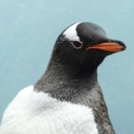

Random Penguin #1 Projects

Hi, I'm just a random penguin on the internet making a mess of things. Here's some stuff I've made:
- Bookface: a scheme for the "Frio" theme inspired by Facebook and designed to give Friendica a more familiar and modern appearance. Has Light Mode, Dark Mode, and Auto variants.
- Bookface User Styles: a user stylesheet to override the "Frio" theme and give Friendica a more familiar, modern appearance even if the server administrator has not installed the Bookface schemes.
- Bookface Wiki: How-To guide for both Friendica Administrators and Users
- Zen Postbox: An add-on for Friendica to support creating and showing styled "Postbox" text-only posts in a fashion similar to a Facebook feature. Zen Postbox adds a compose tool with thumbnails and adds the BBcode automatically.
- Postbox: An add-on for Friendica to support creating and showing styled "Postbox" text-only posts in a fashion similar to a Facebook feature. Unlike Zen Postbox this add-on ONLY ADDS THE STYLESHEET. There is no user interface for creating them, you have to manually enter the BBcode in the Compose window.
- ModCalc: A modern-looking calculator add-on for Friendica with responsive design, simple and scientific modes, and an optional, printable "adding machine" receipt.
Those are the canonical locations for those projects on GitLab. The repositories here on GitHub are mirrors
since the "Friendica" project to which they are related is here.
Socials: